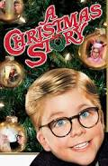
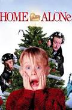
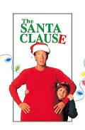
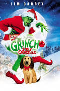
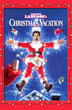

Top 5 Christmas Movies¶
A Christmas Story
(Google Images)
1983
A Christmas Story is a classic Christmas movie that has been around for what seems like forever. All Ralphie is worried about this Christmas is escaping from his bullies and getting his Red Ryder BB Gun! The movie is a comical family Christmas movie.
Home Alone
(Google Images)
1990
Oops, maybe cheating the system with this number 2 spot! Home Alone and its sequels are all fun Christmas movies to remind families each year how much they mean to another, even if you do forget a child every now and then. These movies are filled with funny, action, and family moments!
The Santa Claus
(Google Images)
1994
This might count as cheating again because one cannot simply include the first The Santa Clause without including all of them, so number 3 on this just so happens to be a 3-in-1 deal! Tim Allen plays the perfect Santa in each film, you just have to decide for yourself, do you prefer nice Charlie or bad boy Charlie?
How The Grinch Stole Christmas
(Google Images)
2000
Does your heart grow 3 times whenever you watch this film? I know mine does, how could it not?! How The Grinch Stole Christmas is a movie for all ages that has some humor to it but also teaches people about the true meaning of Christmas.
National Lampoon’s Christmas Vacation
(Google Images)
1989
Start thinking of everything that can go wrong when you try to plan the perfect Christmas. That is what this movie is all about! Clark Griswold is in for some fun in this movie, viewers are sure to be entertained by all of the mishaps he experiences with a family Christmas.